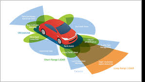
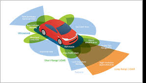
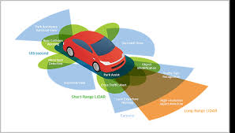

Computer Vision is the ability of a computer to interpret and understand the visual world. It's
about enabling machines to see and process images or videos in a way that's similar to how
humans
do. By using AI algorithms, computer vision can identify objects, faces, or even entire scenes
from visual data. This technology is being used in various applications, from self-driving cars
to facial recognition systems, and is helping to make our lives easier and more efficient.

Computer vision is changing
the game in security by making
surveillance, facial recognition,
and threat detection way more advanced.
AI-powered cameras can spot suspicious
activity and unauthorized access in real
time, helping law enforcement and
security teams respond faster. It’s
also used in biometric authentication
to make access control in workplaces
and public spaces more secure.
In the automotive world, computer vision
is a must-have for self-driving cars. It
helps with lane detection, reading traffi
signs, and avoiding obstacles. Even in
regular cars, features like automatic
parking and collision avoidance rely on
it to make driving safer and smoother.
Whether it's keeping people safe or
making cars smarter, computer vision
is making a big impact.

 
